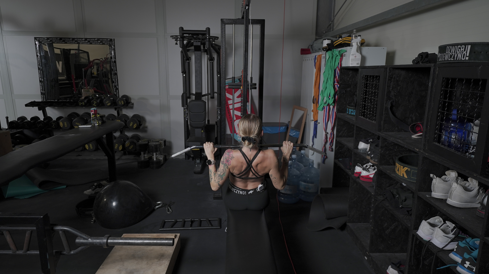
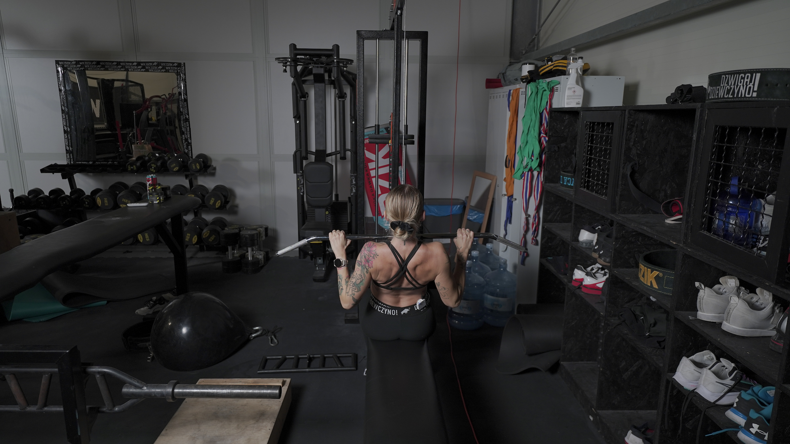

PRZYCIĄGANIE DRĄŻKA WYCIĄGU GÓRNEGO DO KLATKI NACHWYTEM
 

1. Do wyciągu górnego przymocuj uchwyt prosty lub inny, który pozwoli Ci swobodnie trzymać ciężar.
2. Złap uchwyt na szerokość 1.5 szerokości Twoich ramion i usiądź na ławeczce, rozciągając mięśnie pleców.
3. Ściągnij łopatki i obniż ich pozycję.
4. Rozpocznij ruch przyciągania uchwytu do klatki piersiowej, starając się jak najdłużej prowadzić przedramiona prostopadle do podłoża.
5. Powróć do pozycji początkowej, kontrolując ruch.